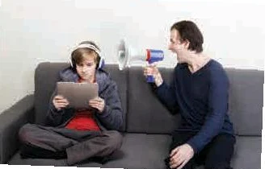

An opinion essay
Lesson 6 — Writing · limiting teenagers’ screen time
2Ideas → Model → Writing
- 🗂️
Organise
ideas for an opinion essay
- 🧱
Identify
the 4-paragraph structure
- 🔗
Use
linking words and details
- ✍️
Write
a 120–150-word essay
Warm-up
How much screen time?
5 minutesHow many hours a day do you spend on screens?

- < 2 hours
- 2–4 hours
- 4–6 hours
- > 6 hours
What do you use your phone for?
studying · social media · gaming · videos · chatting
Should parents strictly limit teenagers’ screen time?
✋ Should
Raise your hand and give ONE reason.
🙅 Shouldn’t
Raise your hand and give ONE reason.
Before writing
Ideas for both sides
9 minutesSentences A–D
A. The gap between teenagers and parents may become wider.
B. Too much screen time is bad for teenagers’ health.
C. Too much screen time can damage eyesight, reduce sleep time, and cause weight gain.
D. Teenagers may think their parents are not fair to them.
Should · Shouldn’t
Should
Reason 1: Teenagers have little time left for homework.
Reason 2: (1) B
Explanation: (2) C
Shouldn’t
Reason 1: Quality of screen time is more important than quantity.
Reason 2: (3) A
Explanation: (4) D
Language toolbox
Give your opinion: I think that … · I believe that … · I firmly believe that …
Reason 1: First of all, … Support: For example, … · This is because …
Reason 2: In addition, … · Moreover, … Result: Therefore, … · As a result, …
Conclusion: In conclusion, …
While writing
Model essay + your essay
16 minutesA, B, C or D?
A. Second reason for supporting this view with examples and facts
B. Conclusion summarising the writer’s point of view
C. First reason for supporting this view with examples and facts
D. Introduction to the issue and the writer’s point of view
Should parents strictly limit teenagers’ screen time?
1. D Many teenagers nowadays spend too much time on digital devices. I firmly believe that parents should strictly limit their screen time for two reasons.
2. C First of all, teenagers who spend a lot of time on screens are less likely to finish their homework. If parents limit their screen time, teenagers will have more time not only for learning, but also for outdoor activities.
Should parents strictly limit teenagers’ screen time?
3. A In addition, too much screen time is bad for teenagers’ health. Looking at a computer or smartphone screen for a long time can damage their eyesight and cause headaches. Too much screen time may also lead to sleep and weight problems.
4. B In conclusion, I think that parents need to control the time their teenage children spend on digital devices. This will ensure that their children have time for homework and outdoor activities, and will protect children’s health.
Opinion → reason → explanation → example
1 · Introduction
the issue + your opinion
2 · Body 1
reason 1 + example
3 · Body 2
reason 2 + example
4 · Conclusion
restate your opinion
Parents should NOT strictly limit screen time
Digital devices play an essential part in teenagers’ lives nowadays. I strongly believe that parents should not strictly limit their children’s screen time for the following reasons.
First of all, ________ (quality is more important than quantity)
In addition, ________ (strict limits may make the gap wider)
In conclusion, ________
After writing
Swap, read, improve
12 minutesTick what you find
- ✓ 120–150 words
- ✓ clear opinion
- ✓ two clear reasons
- ✓ examples / explanations
- ✓ linking words
- ✓ grammar & spelling
Rubric: organisation · ideas · word choice · grammar · legibility — 10 points each.
Did your opinion change after the lesson?
Should
Give ONE reason.
Shouldn’t
Give ONE reason.
Homework
1. Finish and improve your essay (120–150 words).
2. Do the Writing exercises in the workbook.
3. Get ready for Lesson 7 — Communication and Culture.